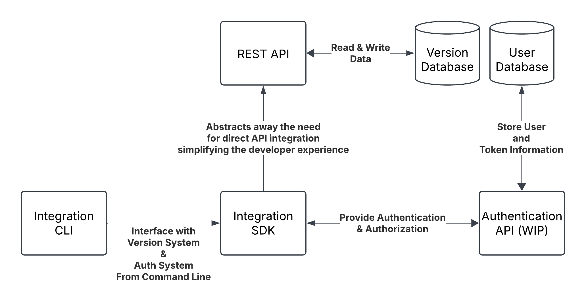

One coherent product version, derived from many.
Your libraries, services, UIs and CLIs each version on their own timeline. lavs composes them into a single, retrievable release manifest — without forcing them to lie about their versions.
Open source · runs on DuckDB locally and PostgreSQL in production — identical API on both.
Independent components. One version that has to make sense.
As software scales into decoupled libraries, microservices and micro-frontends across separate pipelines, there's a pull to force everything onto one version number — unnaturally. lavs is the external system of record that lets each component keep its own version, and derives a product version that's actually true.
A version system built for composed software.
Products → components → versions
Model each product as a set of components, each with its own immutable, history-retaining version line.
Release derivation
Cut a release from mixed component versions and get back a coherent, retrievable product-release manifest.
Multi-database
The same API and test suite pass on DuckDB (local default) and PostgreSQL (production). MySQL & SQL Server are planned.
Pluggable auth
Password + sessions and headless API keys out of the box, selected purely by deploy config — no code changes.
Live updates (SSE)
A server-sent-events channel streams version.created, rollbacks and release cuts so the UI updates live.
The Constellation UI
Browse products, scrub component versions to derive a candidate, and cut a release — a React app over the REST API.
A REST API with an optional auth layer.
Functionally simple by design: a pluggable authentication spine in front of a clean versioning core, with operational /health, /ready and /meta endpoints for Kubernetes and clients.

Up and running in minutes.
Run the container directly, or deploy the Helm chart. It ships non-root, with health/readiness probes wired.
docker
docker build -t lavs .
docker run -p 8080:8080 lavs
# check it's alive
curl localhost:8080/health
# → {"status":"ok"}
helm
helm install lavs ./helm/lavs
# configure auth by deploy config
helm install lavs ./helm/lavs \
--set auth.modes=password,apikey
Stop forcing one version onto everything.
Give every component its own honest version, and let lavs derive the product release that ties them together.